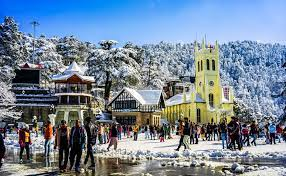
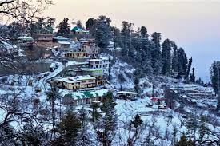

HIMACHAL PRADESH
OTHER DISTRICTS
SHIMLA
Shimla is a district in the state of Himachal Pradesh in Northen India. Its the headquarter is the state capital of Shimla. Neighbouring districts are Mandi and Kullu in the north, Kinnaur in the east, Uttarakhand in the southeast , SOLAN in the southwest and Sirmour in the south. The elevation of the district ranges from 987 meter(3,238ft) to 4,500meters(14,764ft).
| Country | INDIA |
|---|---|
| State | Himachal Pradesh |
| District | Shimla |
| Headqurater | Shimla |
| Tehsils | 12 |
| Government
|
|
| AREA | 5,131km² (1,981 sq mi) |
| Population(2011)
|
|
| Demographics
|
As 2011 it is the third most populous district of Himachal Pradesh after Kangra and Mandi .It is the most urbanised district of Himachal Pradesh.
The most commonly practised religion in the district is Hinduism . Hindi and Pahari are the langugaes spoken . Tourism and agriculture / horticulture are the majors source of income.

